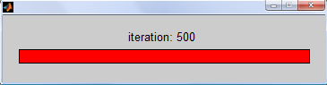

Speedup tricks
One of the main disadvantages of MATLAB compared to compiled languages such as C is that it can be much slower. However, there are a few simple tricks that can make a big difference to the speed of your code. We discuss some of these below.
Contents
- The danger of premature optimization
- Profiling your code
- Timing code
- Progress bar
- Memory preallocation
- Vectorization
- Using built-in functions that are already vectorized
- Logical indexing.
- A slightly more complex example of vectorization
- Bsxfun
- Bsxfun vs repmat
- histc
- sub2ind
- accumarray
- Example using mat2cell and cellfun
- More speedup tips
- Compiling MATLAB
The danger of premature optimization
Before spending a lot of time optimizing your code, you should first identify the key bottlenecks using the profiler. The usual pattern is that 80% of the the time is spent in 20% of the code, so you can focus your efforts accordingly. Also, remember that correctness is more important than speed!
Profiling your code
MATLAB has an excellent profiler, which can tell you how much time your code spends in each one of its functions. It automatically generates a web page summarizing the results, which you can click on to 'drill down'. See the example below.

The report shows a breakdown of all the functions called from your function, the number of times they were called, and the total time spent executing them. Self-time, denoted by a dark blue band, is the time spent within a function not including how long was spent in functions called from here. This is really the statistic you should pay attention to. You can click on a function name to bring up its sourcecode.
You can turn on profiling with the profile on command and turn it off again with profile off. Once profiling is on, execute your code, and then type profile viewer to see the report.
Timing code
The profiler tells you where all the time is being spent, but maybe you just want to know how much time your code is taking. The simplest way to time code is to call tic before your code starts and toc afterwords. A more reliable method is the timeit function, which calls tic/toc multiple times and averages. The first time a function is called, MATLAB generates an optimized p-code file. While this is usually very fast, you will sometimes notice that a function is faster to execute the second time round. MATLAB used to have a flops command, but it was removed. Tom Minka has written some flop counting routines as part of his lightspeed package. Note that the process of publishing this document can throw off the timing results - try the code out for yourself.
Progress bar
MATLAB's graphical progress bar can be a useful tool for getting a sense of how long operations are taking, particularly ones involving loops. Note, however, that this doesn't currently work in Octave. (To be precise, Octave has a waitbar function, but does not support all of the same operations, e.g. close(w)).
w = waitbar(0,'My Progress Bar'); % create a new waitbar, w with 0% progress for i=1:500 isprime(i); w = waitbar(i/500,w,['iteration: ',num2str(i)]); % update the wait bar each iteration end
close(w); % remember to close it
Memory preallocation
MATLAB stores matrices in contiguous blocks of memory. When the size of a matrix changes, MATLAB, if it has not preallocated enough space, must find a new chunk of memory large enough and copy the matrix over. When a matrix grows inside of a loop, this process may have to be repeated over and over again causing huge (even asymptotic) delays. It can therefore significantly speed up your code by preallocating a chunk of memory before entering into a loop. The zeros() and ones() functions are the most common way to do this. Below we see two simple loops in which we store the numbers 1 to 30 000. We preallocate only in the second. Timing the two loops with the tic() and toc() commands, we see that preallocating in this case speeds up the code by about 30 times. The larger the matrices, the more important this becomes.
tic for i = 1:30000 A(i) = i; end without = toc
without =
1.2772
tic B = zeros(30000,1); % Preallocate B with the zeros command. for i = 1:30000 B(i) = i; end with = toc ratio = without / with
with =
0.0447
ratio =
28.5625
Vectorization
Vectorization is the process of making your code work on array-structured data in parallel, rather than using for-loops. This can make your code much faster and is an essential skill to learn. Vectorized operations take advantage of low level optimized routines such as lapack or blas, and can often utilize multiple system cores. We give various examples below which should give you some good idioms to copy. Many more examples can be found here.
Using built-in functions that are already vectorized
Most functions in MATLAB are already vectorized. For example, to take the log of every number in an array A, we simply execute B = log(A). Let us compare this vectorized version to calling log on each element.
A = rand(200,200); % We will use this as our data
non-vectorized version
tic % time the code Bnv = zeros(size(A)); % We preallocate to level the playing field for i=1:size(A,1) for j=1:size(A,2); Bnv(i,j) = log(A(i,j)); end end nonvec = toc;
vectorized version
tic Bv = log(A); vec = toc; assert(isequal(Bnv,Bv)); ratio = nonvec / vec
ratio = 33.0086
Some functions, like mvnpdf() for example, interpret an n-by-d matrix, not as n-times-d elements but as n, d-dimensional vectors. If this is not what we are after, we can convert the matrix into a vector using the (:) operator, pass it to the function, and reshape the output back into the original size with the reshape() function.
Logical indexing.
Here we see the benefit of logical indexing in making code shorter, faster and easier to read.
non-vectorized version
tic B1 = []; % note, it is difficult to preallocate here counter = 1; for j=1:size(A,2) for i=1:size(A,1) if(A(i,j) < 0.2) B1(counter,1) = A(i,j); counter = counter + 1; end end end nonvec = toc;
vectorized version
tic B2 = A(A < 0.2); vec = toc; ratio = nonvec / vec assert(isequal(B1,B2));
ratio = 260.4643
A slightly more complex example of vectorization
Here we perform three tricks at once as it were. Recall that operators such as ^, \, have element-wise equivalents, (e.g. .^), which we can apply to the corresponding elements of two same-sized matrices. Secondly, MATLAB performs automatic scalar expansion in expressions like A+1, and thirdly, we can easily multiply two matrices together without loops. Most loops involving patterned additions and multiplications of vector elements can be translated, with a little thought, into equivalent vectorized statements.
non-vectorized version
tic B1 = zeros(size(A)); for i=1:size(A,1) for j=1:size(A,2) T = 0; for k=1:size(A,1) T = T + A(i,k)*A(j,k); end B1(i,j) = T * (A(i,j)/2) + 1; end end nonvec = toc;
vectorized version
tic B2 = ((A*A') .* (A/2)) + 1; vec = toc; assert(approxeq(B1, B2)); ratio = nonvec / vec
ratio = 3.5823e+003
Bsxfun
Bsxfun, introduced in version 2007a, is now perhaps the most useful and important function for vectorizing your code. One often finds it necessary, for example, to subtract say a row vector from a matrix, (e.g. perhaps you want to standardize your data). Since the row vector is neither a scalar, nor the same size as the matrix, MATLAB will not let you do this directly. One option is to use the repmat() function we saw earlier to replicate the vector so that it is the same size as the matrix and then subtract. However, a better option (in terms of speed, memory, and arguably readability too) is to use the bsxfun() function (bsx stands for binary singleton expansion).
You must first specify the operation you wish to perform as a function handle. Simply precede the name of the function by the @ symbol. Typical choices include @minus, @plus, @times, @rdivide (however, any binary function can be used - type doc bsxfun for a list of suggestions, or write your own). The next two inputs are the (possibly multidimensional) matrices to which you want to apply the function, element-wise. Here is where the singleton expansion comes in. The sizes of the dimensions must match up between the matrices unless the size of a dimension of one of the matrices is 1, a singleton, in which case it is implicitly replicated to match the size of the corresponding dimension in the other matrix. This can often save huge amounts of memory over repmat, and can significantly speed up your code. In recent versions, bsxfun is multithreaded and can take advantage of multiple cpus. Here are some examples.
A = meshgrid(1:6,1:5)' B = A - repmat(mean(A,1),size(A,1),1); % center each column C = bsxfun(@minus, A, mean(A,1)) % center each column (the better way) assert(approxeq(B, C)); D = bsxfun(@rdivide,A,sqrt(sum(A.^2,1))) % make each column have unit norm
A =
1 1 1 1 1
2 2 2 2 2
3 3 3 3 3
4 4 4 4 4
5 5 5 5 5
6 6 6 6 6
C =
Columns 1 through 4
-2.5000 -2.5000 -2.5000 -2.5000
-1.5000 -1.5000 -1.5000 -1.5000
-0.5000 -0.5000 -0.5000 -0.5000
0.5000 0.5000 0.5000 0.5000
1.5000 1.5000 1.5000 1.5000
2.5000 2.5000 2.5000 2.5000
Column 5
-2.5000
-1.5000
-0.5000
0.5000
1.5000
2.5000
D =
Columns 1 through 4
0.1048 0.1048 0.1048 0.1048
0.2097 0.2097 0.2097 0.2097
0.3145 0.3145 0.3145 0.3145
0.4193 0.4193 0.4193 0.4193
0.5241 0.5241 0.5241 0.5241
0.6290 0.6290 0.6290 0.6290
Column 5
0.1048
0.2097
0.3145
0.4193
0.5241
0.6290
Bsxfun vs repmat
For a detailed timing comparison of bsxfun and repmat, see here. Below we just give a simple example. We subtract off the mean of the third dimension and leave our 'non-vectorized' version at least somewhat vectorized to emphasize the role of bsxfun().
A3d = rand(200,300,400); A1 = A3d; A2 = A3d; A3 = A3d;
non-vectorized version
tic m = mean(A1,3); for i=1:size(A1,3) A1(:,:,i) = A1(:,:,i) - m; end nonvec = toc
nonvec =
0.8712
vectorized version
tic A2 = bsxfun(@minus,A2,mean(A2,3)); vec = toc
vec =
0.5949
We could have also used repmat() as follows, but this requires more memory and is slightly slower.
tic A3 = A3 - repmat(mean(A3,3),[1,1,size(A3,3)]); rep = toc
rep =
0.7487
assert(isequal(A1,A2,A3));
Now let us look at a slightly more complicated example. Suppose we have two matrices, X, and y, where X is real-valued and of size n-by-d, and y is of size n-by-1, and contains integers in the range 1:C. Further suppose we want to sum up the rows of X according to the integer labels in y, resulting in a C-by-d matrix. Here is the setup.
n = 100;
d = 5;
C = 8;
X = rand(n, d);
y = randi(C, [n, 1]);
M = zeros(C, d); % pre-allocate!
One option is to simply loop.
for c = 1:C ndx = find(y==c); M(c, :) = sum(X(ndx, :)); end
We could have taken advantage of logical indexing as well to achieve the same result.
for c = 1:C M(c, :) = sum(X(y==c, :)); end
Now let's see how to do this using bsxfun instead of a loop.
S = bsxfun(@eq, (1:C)', y'); size(S)
ans =
8 100
Mbsx = S*X; assert(approxeq(M, Mbsx));
Since (1:C)' is a column vector, and y' is a row vector, both matrices are implicitly expanded. The @eq function checks for equality, elementwise, and we end up with one-of-C encoding of y, so that S(i, j) = 1 iff y(j) = i. This matrix S then acts like an indicator function, and when we matrix multiply by X, we sum up each group. Notice that calling bsxfun on a row and column vector, respectively, (or vice versa) performs a kind of outer-product, with @times replaced by the function of our choice.
A1 = (1:10)'*(1:10); % outer product A2 = bsxfun(@times, (1:10)', 1:10); % same result assert(approxeq(A1, A2));
It is often more efficient to create S as a sparse matrix, but this doesn't work in octave.
S = bsxfun(@eq, sparse(1:C)', y');
The permute and reshape functions can be useful for manipulating multidimensional matrices for later use by bsxfun. Here we permute the 4-by-5 matrix into one of size [1 1 4 5]. The result of multiplying these matrices is then of size [2 3 4 5]. In general, one can perform tenser products using this approach, combined with sum. Note that reshape is faster than permute, but has different semantics. Permute changes the linear ordering of the elements, (like transpose) but reshape does not.
A = rand(2, 3); B = rand(4, 5); C = bsxfun(@times, A, permute(B, [3 4 1 2])); size(C)
ans =
2 3 4 5
histc
The histc function is another great vectorization tool. Suppose we have a an array or matrix of integers in 1:C and we want to count how often each integer occurs: use the following. Note that if X is a matrix, it operates, (counts) along rows.
C = 5; X = randi(5, [3, 4]); counts = histc(X, 1:C)
counts =
0 1 0 1
0 0 0 0
1 1 1 0
1 0 2 0
1 1 0 2
If you have a cell array of string labels, and not integers, you can convert these to integers first by calling the 'unique' function, and grabbing its 3rd output.
A = {'alpha', 'alpha', 'beta', 'beta', 'gamma', 'alpha', 'beta', 'beta'};
[j, j, X] = unique(A);
X
X =
Columns 1 through 7
1 1 2 2 3 1 2
Column 8
2
counts = histc(X, 1:3)
counts =
3 4 1
We can now return to an earlier example and see how we can compute the mean instead of sum of grouped rows of a matrix.
n = 100;
d = 5;
C = 8;
X = rand(n, d);
y = randi(C, [n, 1]);
S = bsxfun(@eq, (1:C)', y');
M = S*X;
counts = histc(y, 1:C);
M = bsxfun(@rdivide, M, counts); % divide by counts to get mean
sub2ind
We saw in an earlier tutorial that we could index into a matrix using linear indexing. The sub2ind function takes two vectors of indices and converts them to the equivalent linear indices given the size of the matrix. This can be useful vectorization tool. Suppose we want to extract arbitrary elements from a matrix, e.g. (1, 3), (2, 4), (2, 5), (3, 6). First group the row and column indices separately.
X = rand(10, 10); R = [1 2 2 3]; C = [3 4 5 6]; % Rather than looping, the first attempt might be to use these to index % directly into X: X(R, C)
ans =
0.4462 0.7346 0.4032 0.4629
0.3830 0.1767 0.2086 0.6274
0.3830 0.1767 0.2086 0.6274
0.4895 0.1850 0.1792 0.0070
However, we get the elements indexed by every combination of R, and C, which is not what we want. Instead use sub2ind as follows:
X(sub2ind(size(X), R, C))
%
ans =
0.4462 0.1767 0.2086 0.0070
accumarray
There are many uses of the somewhat complicated accumarray function. We give just one simple example here. Suppose we have a vector of indices in 1:C and we want to count how often we transition from one value to the next. Suppose for example that Z = [1 1 2 1 2 2 3 1 1]: 1 transitions to itself twice, 2 transitions to 1 only once, and to itself once, 3 transitions to 1 once, etc...
Z = [1 1 2 1 2 2 3 1 1]';
subs = [Z(1:end-1), Z(2:end)] % indices
subs =
1 1
1 2
2 1
1 2
2 2
2 3
3 1
1 1
vals = 1; % summing 1's amounts to counting sz = [3 3]; % output size fn = @sum; % accumulation function A = accumarray(subs, vals, sz, fn)
A =
2 2 0
1 1 1
1 0 0
If we want to turn this into a stochastic matrix, we can use bsxfun to normalize it.
A = bsxfun(@rdivide, A, sum(A, 2))
A =
0.5000 0.5000 0
0.3333 0.3333 0.3333
1.0000 0 0
Example using mat2cell and cellfun
Suppose we have a large numeric matrix and we want to apply a function to arbitrary sized blocks of it. That is, we want to partition a matrix of size m-by-n into many smaller matrices of differing sizes, apply a function to each block, and group the results back together. We could extract each block first with a long series of indexing operations and then loop over them all applying the function, but there is better way involving the mat2cell() and cellfun() functions, discussed in this section
A = rand(100,40); % here is our data
Partition the matrix into 12 blocks of different sizes. These blocks are stored in a 4x3 cell array. Notice the sizes of each of the 12 blocks and how we achieved these sizes with the inputs to mat2cell().
groups = mat2cell(A,[10,30,20,40],[5,27,8])
groups =
Columns 1 through 2
[10x5 double] [10x27 double]
[30x5 double] [30x27 double]
[20x5 double] [20x27 double]
[40x5 double] [40x27 double]
Column 3
[10x8 double]
[30x8 double]
[20x8 double]
[40x8 double]
Create a function to apply to each block; we will choose something simple like replacing each element in a block with the block's largest value.
f = @(x)repmat(max(x(:)),size(x));
Use the cellfun() function to apply this function to every one of the 12 elements in groups, (i.e. to every matrix block). We have to set 'UniformOutput' to false because the sizes of the elements returned by cellfun() will be different.
groupMax = cellfun(f,groups,'UniformOutput',false)
groupMax =
Columns 1 through 2
[10x5 double] [10x27 double]
[30x5 double] [30x27 double]
[20x5 double] [20x27 double]
[40x5 double] [40x27 double]
Column 3
[10x8 double]
[30x8 double]
[20x8 double]
[40x8 double]
We then convert back to a numeric matrix with the same size as our original matrix A.
B = cell2mat(groupMax);
See also the filter2 command. If you have the image processing toolbox, check out the blkproc and im2col commands, which are similar.
More speedup tips
In the last example, we used cellfun() function but there is a similar function arrayfun() that applies a function to every element of an array. When other vectorization techniques fail, this can be a better alternative than looping over every element yourself, but is not always much faster.
The vectorize() function takes in a string or function handle and converts all operators, (e.g ^) to their element-wise equivalents, (e.g. .^). This can be useful when using someone else's function that was not vectorized to begin with.
Recall from the matrix chapter that there are many functions that will create matrices such as meshgrid(), or blkdiag(), yet again helping us avoid loops.
When a value vec(i) depends on on entries v(1)...v(i-1) for instance, we can use functions like cumsum(), cumprod(), filter(), or conv(). See their help entries for more information. See also the kron function, which can be another useful primitive for use in vectorization.
Tom Minka has some tips, and references to other people's tips, here.
Compiling MATLAB
MATLAB lets you compile your code so that others, without MATLAB installed can run your code: Mathwork's licensing model lets you do this royalty free. Details can be found here. However, this does not usually result in a speed increase since the 'compiled' code simply calls out to an encapsulated version of MATLAB, called the MCR, (MATLAB compiler runtime).
There is a method called emlmex that does give speedups, but only for a narrow set of functions. In particular, every time the size of the memory footprint of the function changes, it must be recompiled. Newer versions of MATLAB relax this restriction somewhat by letting you specify an upper bound on the size of a matrix.
Sometimes the only way to get really big speedup is to implement your code in another language like C, compile it with mex, and then call that code from within your MATLAB program. For details, click here. Note however, that vectorized MATLAB code is often faster than all but the most expertly implemented c-code. There is little use, for instance, in implementing your own linear algebraic operations, like matrix multiplication, or solving systems of linear equations.